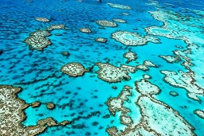
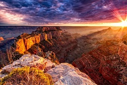
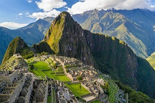
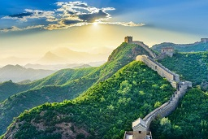
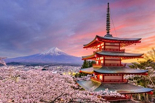

Nieodłącznym elementem wakacji w Australii powinno być zobaczenie największej na świecie rafy koralowej położonej na Morzu Koralowym, na terenie utworzonego specjalnie Parku Morskiego Wielkiej Rafy Koralowej. Oczywiście najlepiej podziwiać rafę nurkując – jest to niesamowite przeżycie. Bogactwo fauny i flory, wśród których występuje wiele gatunków endemicznych, a do tego przejrzysta woda – to połączenie idealne.
Wycieczka do Stanów Zjednoczonych to must have nie tylko ze względu na kultowy Nowy Jork czy plaże Kaliforni. Ten różnorodny kraj bogaty jest również w niesamowite dzieła natury, a należy do nich właśnie Wielki Kanion. Jest to najbardziej niesamowity przełom rzeki na świecie – rzeki Kolorado znajdujący się w stanie Arizona. Oprócz gwarantowanego zachwytu nad pięknem tego miejsca w okolicy możecie spodziewać się również oferty sportów ekstremalnych np. spływu pontonami.
To jedno z najbardziej rozpoznawalnych miejsc w całej Ameryce Południowej – zaginione miasto Inków położone w peruwiańskich górach w otoczeniu szczytów Huayna Picchu i La Montana Machu Picchu. Polecamy udać się w to miejsce częściowo piechotą, ponieważ sama wędrówka po górach dostarcza niesamowitych wrażeń. Sam widok z miasta zapiera dech w piersiach, a historie o tym mieście czy teorie związane z dawnym imperium Inków to fascynujące uzupełnienie wycieczki po Peru.
Pewnie mało kto wyobraża sobie podróż do Chin bez odwiedzenia tego legendarnego zabytku. Wielki Mur Chiński to oczywiście budowla wzniesiona w celach obronnych, pierwotnie miał długość ponad 2000 km, przed dziesięcioma laty natomiast został uznany za jeden z nowych siedmiu cudów świata. Zwiedzający mogą zobaczyć mur tylko w oznaczonych miejscach, kilka z nich znajduje się m.in. w okolicach Pekinu.
Góra Fuji albo Fudżi to najwyższy szczyt Japonii wznoszący się na wysokość ponad 3700 m n.p.m., a jednocześnie czynny stratowulkan. Znajduje się na wyspie Honsiu, na terenie parku narodowego; zachwyca naturalnym pięknem i przyciąga podróżników uwielbiających trekingi. W okolicy znajdują się schroniska dla turystów, obserwatorium meteorologiczne jeziora zwane Pięcioma Jeziorami Fuji oraz las Aokigahara, czyli tzw. Las Samobójców, który nie bez powodu okryty jest złą sławą…
